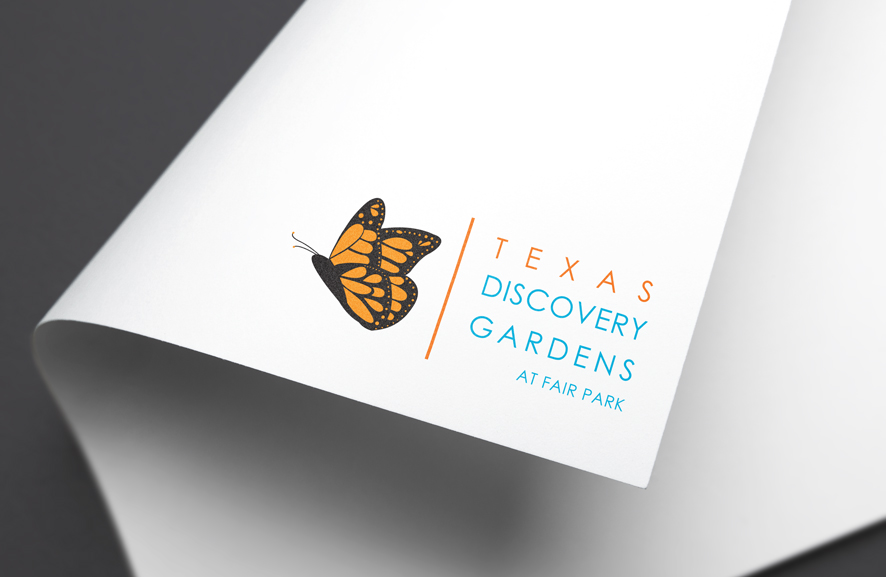

Texas Discovery
Garden Logo Design
The Texas Discovery Garden wanted to update their logo to match the energetic atmosphere and colorful gardens that currently surrounds them. One of the requirements was a dynamic Monarch Butterfly with modern type.
Working together with Alpha Business Images, LLC, the Monarch Butterfly was drawn in an elegant flying pose that shows off it's distinct colors. The typeface Century Gothic was chosen for its playful form that describes that atmosphere of the Texas Discovery Garden. The colors chosen pertains to the markings of the butterfly, and the sky that it flies under.
Typography
Colors
